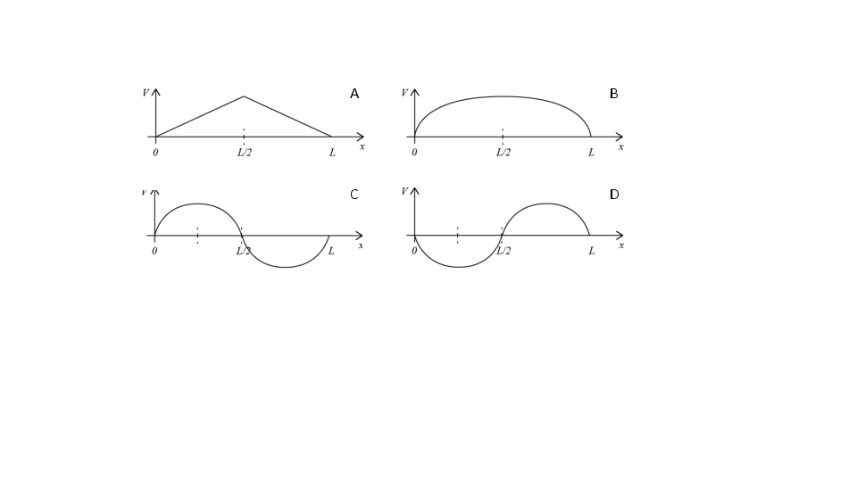
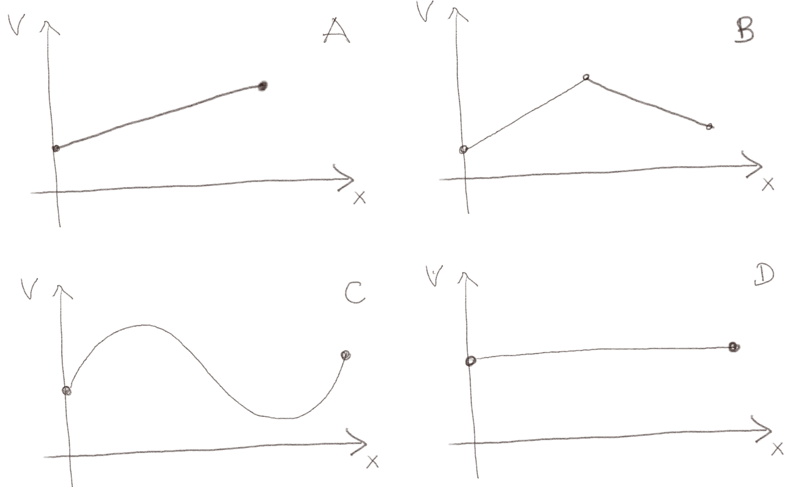
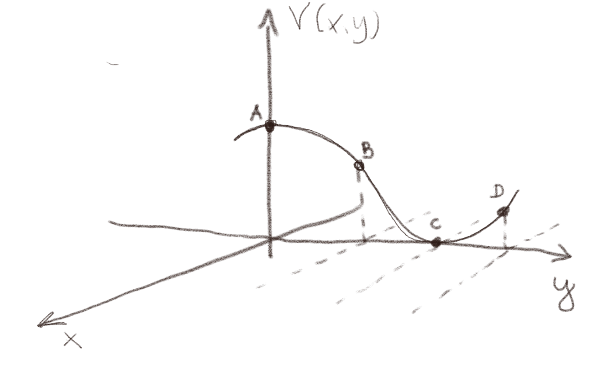
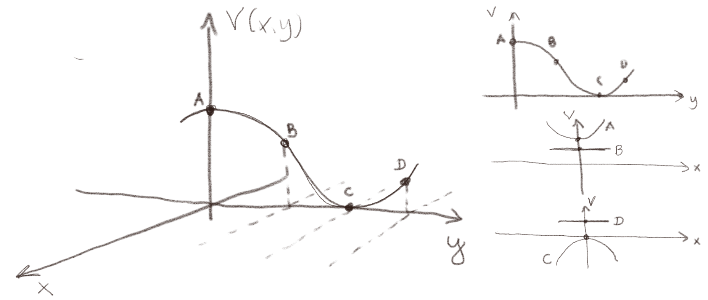
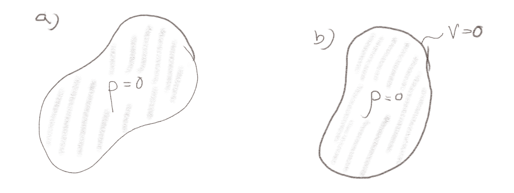

(Lærebok 5.1.1)
a) Gjennomfør utregningen som viser hva Laplace likning blir i to dimensjoner i Kartesiske koordinater?
\( \nabla = \left( \frac{\partial}{\partial x}, \frac{\partial}{\partial y}\right) \) i to dimensjoner.
\( \frac{\partial^2 V}{\partial x^2} + \frac{\partial^2 V}{\partial y^2} = 0 \)
Vi finner først \( \nabla V \) og så \( \nabla \cdot (\nabla V) \): $$ \begin{equation} \nabla V = \left( \frac{\partial}{\partial x}, \frac{\partial}{\partial y}\right)V = \left( \frac{\partial V}{\partial x}, \frac{\partial V}{\partial y}\right) \; , \tag{1} \end{equation} $$ og \( \nabla \cdot ( \nabla V ) \) er dermed $$ \begin{align} \nabla \cdot ( \nabla V ) &=& \left( \frac{\partial}{\partial x}, \frac{\partial}{\partial y} \right) \cdot \left( \frac{\partial V}{\partial x}, \frac{\partial V}{\partial y}\right) \tag{2}\\ &=& \left( \frac{\partial}{\partial x} \frac{\partial V}{\partial x} + \frac{\partial}{\partial y} \frac{\partial V}{\partial y} \right) \tag{3}\\ &=& \frac{\partial^2 V}{\partial x^2} + \frac{\partial^2 V}{\partial y^2} \; . \tag{4} \end{align} $$
Kan disse uttrykkene være løsninger av Laplace likning eller Poissons likning i en dimensjon på intervallet \( -1 < x < 1 \)? Hvis det er en løsning av Poissons likning, hva er i så fall \( \rho(x) \)?
a) $$ \begin{equation*} V(x) = 0 \end{equation*} $$
Mulig løsning av Laplace og Poissons likning.
I dette tilfellet er \( \frac{\d^2 V}{\d x^2} = 0 \) som er en løsning av Laplace likning. (Hvis det er en løsning av Laplace likning, er det også en løsning av Poissons likning, men da med \( \rho(x) = 0 \) i det oppgitte intervallet.)
b) $$ \begin{equation*} V(x) = 2 \sin x \end{equation*} $$
Mulig løsning av Poissons likning.
Ved å sette uttrykket inn i \( \d^2 V/\d x^2 \) ser vi at $$ \begin{equation} \frac{\partial^2 V}{\partial x^2} = - 2 \sin x \; . \tag{5} \end{equation} $$ Dette kan ikke være en løsning av Laplace likning, men kan være en løsning av Poissons likning hvis ladningsfordelingen er \( \rho(x)/\epsilon_0 = - (-2 \sin x) = 2 \sin x \).
c) $$ \begin{equation*} V(x) = 2x-3 \end{equation*} $$
Mulig løsning av Laplace og Poissons likning.
Vi setter uttrykket inn i \( \d^2 V/\d x^2 \) og finner $$ \begin{equation} \frac{\partial^2 V}{\partial x^2} = 0 \; . \tag{6} \end{equation} $$ Dette er en løsning av Laplace likning.
Ladningsfordelingen \( \rho(x) \) er gitt som $$ \begin{equation*} \rho(x) = \left\{ \begin{array}{cc} \rho_0 & \quad , \quad 0 < x < L/2 \\ -\rho_0 & \quad , \quad L/2 < x < L \end{array} \right. \end{equation*} $$

a) Hvilken skisse av det elektriske potensialet \( V(x) \) er riktig (A,B,C,D)?
C
Poissons likning relaterer ladningstettheten til den andrederiverte av potensialet: $$ \begin{equation} \frac{\d^2 V}{\d x^2} = - \frac{\rho}{\epsilon} \tag{7} \end{equation} $$ Hvis vi da ser på de fire forskjellige potensialene ser vi at:
(Lærebok 5.1.2)
(Lærebok 5.1.2)

a) Hvilke av potensialene i figuren over kan ikke være en løsning av Laplace likning?
C
Vi ser at C ikke kan ha en annenderivert som er null. A og D har klart en annenderivert som er null. Hva med B? Denne har en annenderivert som er lik null, med unntak av i ett punkt. Dette kan være en grenseverdi som er bestemt. Vi vil i så fall si at B også tilfredsstiller Laplace likning.
Laplace likning er knyttet til den annenderiverte av potensialet i en dimensjon: $$ \begin{equation} \frac{\d^2 V}{\d x^2 } = 0 \; . \tag{8} \end{equation} $$ Det gjør at løsningen blir litt kjedelige. Men de blir ikke like kjedelige i to dimensjoner hvor Laplace likning er $$ \begin{equation} \frac{\partial^2 V}{\partial x^2 } + \frac{\partial^2 V}{\partial y^2 } = 0 \; . \tag{9} \end{equation} $$ Figuren viser et tverrsnitt \( V(x=0,y) \) gjennom et todimensjonalt potensiale.

a) Hva er fortegnet til \( \frac{\partial^2 V}{\partial y^2 } \) i de fire punktene A, B, C, D?
A: \( \frac{\partial^2 V}{\partial y^2 } < 0 \), B: \( \frac{\partial^2 V}{\partial y^2 } \simeq 0 \), C: \( \frac{\partial^2 V}{\partial y^2 } > 0 \), D: \( \frac{\partial^2 V}{\partial y^2 } \simeq 0 \).
Vi leser av fortegnet til \( \frac{\partial^2 V}{\partial y^2 } \) som krumningen til kurven slik vi er vant til å lese den av i funksjonsdrøfting. Vi ser at punktet A er et lokalt topp-punkt, slik at \( \frac{\partial^2 V^2}{\partial y^2 } < 0 \). Punktet C er et lokalt bunn-punkt silk at \( \frac{\partial^2 V}{\partial y^2 } > 0 \). For B og D må vi foreta en tilnærming. I punktet B ser det ut til at \( V(0,y) \) går fra å ha et negativt fortegn når A til å ha et positivt fortegn nær C. Vi antar at B ligger midt mellom at at \( \frac{\partial^2 V}{\partial y^2 } \simeq 0 \). For punkt D er det vanskeligere å vurdere. Vi kan bruke samme argument som for B, i så fall er \( \frac{\partial^2 V}{\partial y^2 } \simeq 0 \), eller vi kunne sagt at krumningen fremdeles er positiv, slik som i C, men at den er mindre, slik at \( \frac{\partial^2 V}{\partial y^2 } \) blir negativ, men mindre enn i C. Begge deler er ok tolkninger av den ikke helt presise kurven.
b) Skisser hvordan \( V(x,y) \) må variere i \( x \)-retningen i punktene som er markert i grafen, slik at potensialet tilfredsstiller Laplace likning.
Summen av \( \frac{\partial^2 V}{\partial x^2 } \) og \( \frac{\partial^2 V}{\partial y^2 } \) skal til sammen bli null.
Ideen er at \( \frac{\partial^2 V}{\partial x^2 } \) må ha samme størrelse (absoluttverdi), men motsatt fortegn av \( \frac{\partial^2 V}{\partial y^2 } \). Det betyr at i punktet A må \( \frac{\partial^2 V}{\partial x^2 } > 0 \), i punktet C må \( \frac{\partial^2 V}{\partial x^2 } < 0 \) og i punktene B og D hvor \( \frac{\partial^2 V}{\partial y^2 } \simeq 0 \) må også \( \frac{\partial^2 V}{\partial x^2 }\simeq 0 \). Dette er forsøkt skissert i figuren under.

(Lærebok 5.3.1)

a) Området i del a i figuren inneholder ingen ladninger. Hva kan vi si om \( V \) i det indre av området?
1
Det eneste vi vet om \( V \) på det indre av området er at den må tilfredsstille Laplace likning med en gitt grensebetingelse på randen (yttergrensen) av området. Det er mange muligheter for et slikt potensial avhengig av hva \( V \) er på yttergrensen.
b) Området i del b i figuren inneholder ingen ladninger og på randen (grensen) av området et \( V=0 \). Hva kan vi si om \( V \) i det indre av området?
2
Nå er problemstillingen annerleder. Vi vet at \( V \) ikke kan ha en ekstremalverdi i det indre av området. Det betyr at \( V \) ikke kan være større enn det \( V \) er på yttergrensen. Samtidig betyr det at \( V \) ikke kan være mindre enn det \( V \) er på yttergrensen. Siden \( V = 0 \) på hele yttergrensen, betyr det at \( V = 0 \) i hele det indre.
(Lærebok 5.3.2)
Potensialet \( V(x) = 2x - 1 \) er en mulig løsning av Laplace likning --- hvis den bare passer til grensebetingelsene.
a) Kan \( V(x) \) være en løsning av Laplace likning med grensebetingelsene \( V(0) = 0 \) og \( V(1) = 1 \)?
Nei
Vi sjekker hva \( V(x) \) er: \( V(0) = 2\times 0 -1 = -1 \). Dette er forskjellig fra \( V(0) = 0 \). Det betyr at \( V(x) \) ikke er en løsning av Laplace likning med disse grensebetingelsene.
b) Hva må grensebetingelsen for \( V(x) \) være i \( x=-1 \) for at \( V(x) = 2x-1 \) skal kunne være en løsning av Laplace likning i intervallet \( -1 \le x \le 1 \)?
\( V(-1) = -3 \)
Vi finner dette ved å sette inn i \( V(x) \). Da finner vi \( V(-1) = 2 (-1) -1 = -3 \). Grensebetingelsen må derfor være \( V(-1) = -3 \).
(Lærebok 5.4)
a) Er potensialet \( V(r) = C/r \), hvor \( C \) er en konstant, en mulig løsning av Laplace likning i kulekoordinater?
Ja
Vi setter inn i uttrykket og finner $$ \begin{equation} \frac{1}{r^2} \frac{\partial }{\partial r} \left( r^2 \frac{\partial V}{\partial r} \right) = \frac{1}{r^2} \frac{\partial }{\partial r} \left( r^2 \frac{-C}{r^2} \right) = \frac{1}{r^2} \frac{\partial }{\partial r} \left(C \right) = 0 \tag{10} \end{equation} $$ Dette er alltid null fordi den deriverte av konstanten \( C \) er null. Potensialet er derfor en mulig løsning av Laplace likning.
(Lærebok 5.4.5)